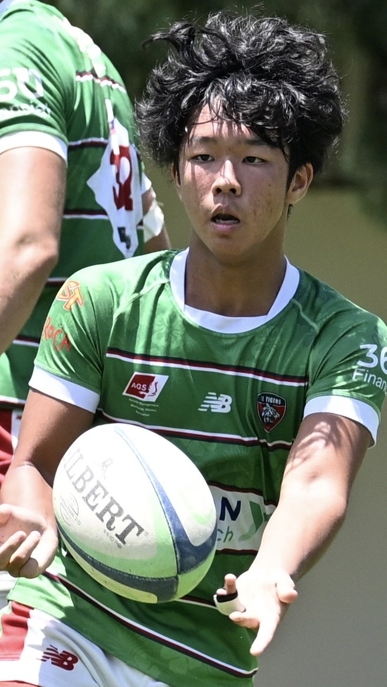

Rennosuke Kubo (Ren)
My name is Rennosuke Kubo, but most people call me Ren. My life has been a journey through diverse worlds, beginning with my roots in Japan and expanding significantly with my move to Malaysia. Attending a Japanese school while living abroad was an invaluable experience for me, as it allowed me to maintain a deep connection with my own culture and traditions within Malaysia's vibrant, multicultural society. Later, I transferred to Sunway International School, where I was exposed to various cultures. I am certain that without these international experiences, the deep understanding of cultural diversity and global curiosity that shape me today would not have been born.
One of the things I am most proud of is my role as a member of the rugby team's leadership group. Leadership on the pitch was a major turning point for me. I learned how to communicate clearly under pressure and how to inspire teammates in crucial moments. The confidence I gained through rugby extends beyond the pitch, drawing strength into all aspects of my life and giving me the courage to face new challenges.
My weekends embody the balance I always strive for. Typically, I start my day by pushing my limits at the gym or rugby field. After my physical workout, I focus on studying. Then, to unwind, I immerse myself in digital storytelling. I play games, watch anime, or tune in movies and TV shows. This cycle of physical training, mental discipline, and creative relaxation keeps me grounded. Whether leading a team in tough matches or learning new cultures, I approach life with the confidence and experience born from my Japanese roots and international adventures.